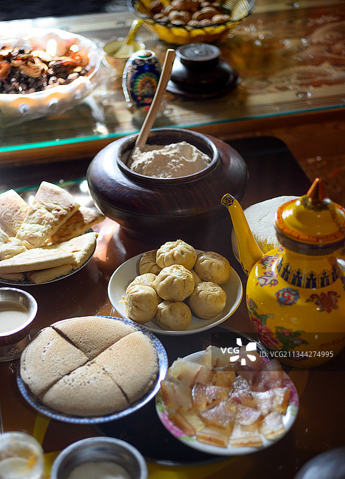
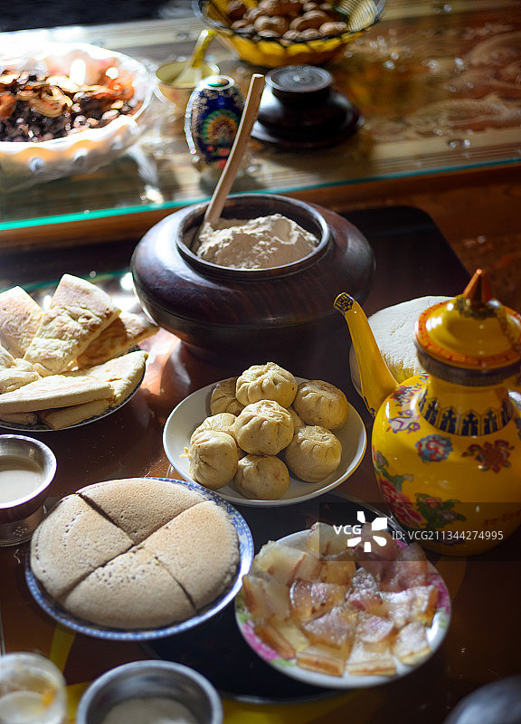
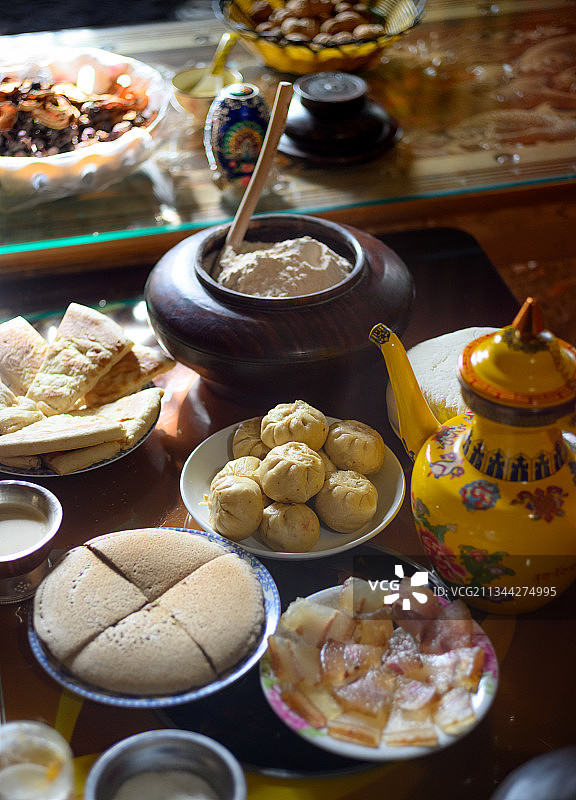

藏面是藏族的传统美食，其历史可以追溯到公元7世纪。
当时，伊朗和克什米尔人来到西藏定居，带来了先进的饮食文化，藏面可能就是在这个时期被发明的。
此外，藏面在藏语中被称为“补突”，“补”是食用碱的藏语发音，“突”是面条的意思，后来因发音与“藏”相近，逐渐被称为“藏面”
主料：小麦面粉（高筋面粉为佳）、鸡蛋（可选）、水、盐。
辅料：牦牛肉、牛骨、葱花、香菜、酸萝卜、藏式辣酱。
和面：将面粉倒入容器中，加入适量水和盐，搅拌均匀后揉成光滑的面团，静置30分钟。
擀面：将面团擀成薄片，切成细条，下入沸水中煮熟后捞出，过冷水，沥干备用。
熬汤：将牦牛骨放入锅中，加入适量水，放入花椒、生姜、盐、当归等调料，煮30-40分钟。
煮面：将煮好的面条放入牦牛骨汤中，加入切好的牦牛肉丁、葱花，撒上香菜。
搭配：旁边配上一小碟酸萝卜和藏式辣酱，增加风味。

选择优质材料：选择优质的砖茶和酥油，以确保口感和营养。
控制温度：茶水温度不宜过高或过低，以免影响酥油的融合。
搅拌均匀：搅拌时要均匀用力，避免酥油结块。
调整口味：根据个人喜好调整酥油和盐的比例。
传统礼仪：在藏族地区，喝酥油茶时不能一口喝干，需边喝边加。